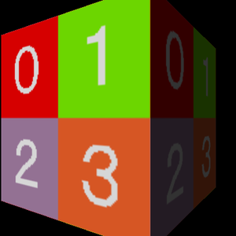
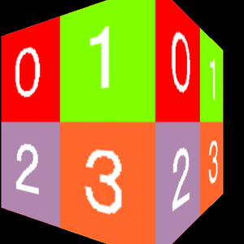
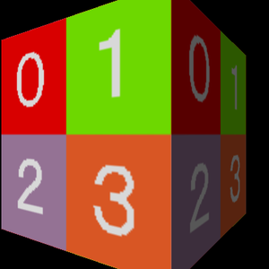

第 07 回
3D モデルを自分のシェーダーで描く(ライト)
この回の目標
- MV1 のモデル(
MV1LoadModelで読んだもの)を、自分の頂点シェーダー・ピクセルシェーダーで描ける。 - ライトの当たり方(明るさ)を、法線とライトの向きの内積で計算できる。
開くサンプル

1. samples/A01_NormalMesh_NoLight(ライト無し。テクスチャの色がそのまま出る)
テンプレート: templates/07a_model_nolight.dxtemplate
2. samples/A05_NormalMesh_DirLight(ディレクショナルライトあり。面の向きで明るさが変わる)
テンプレート: templates/07b_model_dirlight.dxtemplate
どちらも回る箱が出ます。2 つを見比べると、ライトの計算が何をしているかが分かります。

A01 ライト無しA05 ディレクショナルライト
モデルを自分のシェーダーで描く手順(src/main.cpp)
C++MV1SetUseOrigShader( TRUE ) ; // モデルを自分のシェーダーで描く
SetUseVertexShader( VertexShaderHandle ) ; // 頂点シェーダー
SetUsePixelShader( PixelShaderHandle ) ; // ピクセルシェーダー
MV1DrawModel( ModelHandle ) ;
- 頂点シェーダーとピクセルシェーダーの両方が必要です。片方だけでは正しく描けません(仕様書 3.3)。
- モデルのテクスチャは、DxLib が 0 番(
t0)に置いてくれます。
入力の並び(shaders/…VS.hlsl)
HLSL(シェーダー)struct VS_INPUT
{
float3 Position : POSITION0 ;
float3 Normal : NORMAL0 ; // 法線(面が向いている方向)
float4 Diffuse : COLOR0 ;
float4 Specular : COLOR1 ;
float4 TexCoords0 : TEXCOORD0 ; // float4 なので注意
float4 TexCoords1 : TEXCOORD1 ;
} ;
- MV1 のモデルの頂点は、
DrawPolygon3DToShaderの頂点と並びが違います。モデルの種類(剛体・スキンメッシュ・法線マップ付き)でも増えます(仕様書 5.3)。 - 04 と同じく、並びが合わないとエラーも出ずに何も描かれません。
ライトの計算(A05 の NormalMesh_DirLightVS.hlsl)
HLSL(シェーダー)lLightLitParam.x = dot( lViewNrm, -g_Common.Light[ 0 ].Direction ) ; // 法線とライトの逆向きの内積
lLightLitDest = lit( lLightLitParam.x, lLightLitParam.y, lLightLitParam.w ) ;
VSOutput.Diffuse = lLightLitDest.y * ライトの色 * マテリアルの色 + アンビエント ;
- 内積は、2 つの向きがどれだけ同じ方向かを表す数です(同じ向きで 1、直角で 0、反対で -1)。面がライトの方を向いているほど明るくなります。これをランバートの法則といいます。
Direction)は「光が進む向き」なので、符号を反対にして「ライトの方への向き」にしてから内積を取ります。litは、内積がマイナス(ライトの裏側)なら 0 にしてくれる関数です。.yがディフューズ(拡散)の明るさ、.zがスペキュラー(てかり)の強さ。g_Common.Light[ 0 ]は、DxLib のライトの設定(SetLightDirectionなど)から DxLib が入れてくれる値です。向きはカメラから見た向き(ビュー空間)なので、法線もビュー空間にしてから内積を取ります(仕様書 8.1)。- この計算は頂点ごとにしています(頂点ライティング)。三角形の中は、頂点の色をなめらかに混ぜた色になります。
課題
- ★7-1ライトの向きを変える(C++ で
SetLightDirection( VGet( … ) ))。どの面が明るくなるか予想してから試す。 - ★★7-2ハーフランバートにする。内積(-1〜1)を
* 0.5f + 0.5fで 0〜1 にしてから 2 乗し、それを明るさにする。ライトの反対側が真っ暗にならず、やわらかい陰影になる。 - ★★7-3アンビエント(ライトが当たらない所の明るさ)を足して、暗い面を少し明るくする。
解答例: 7-2 → answers/07_half_lambert(【課題 7-2】 の所)
解答例を動かした画面
 元のサンプル(A05)
元のサンプル(A05)
answers/07_half_lambert